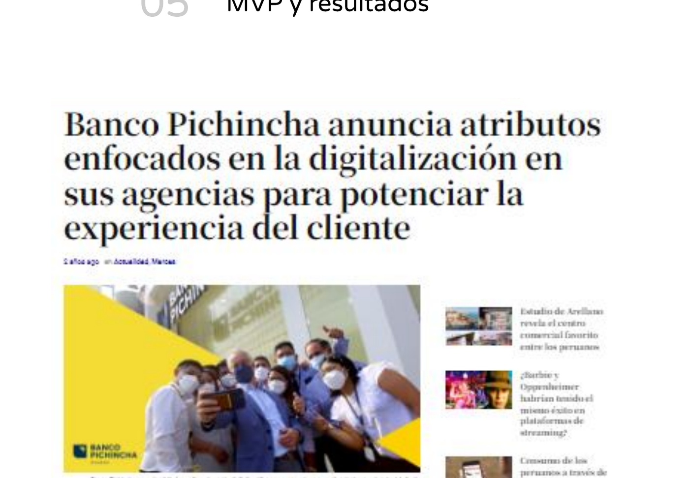
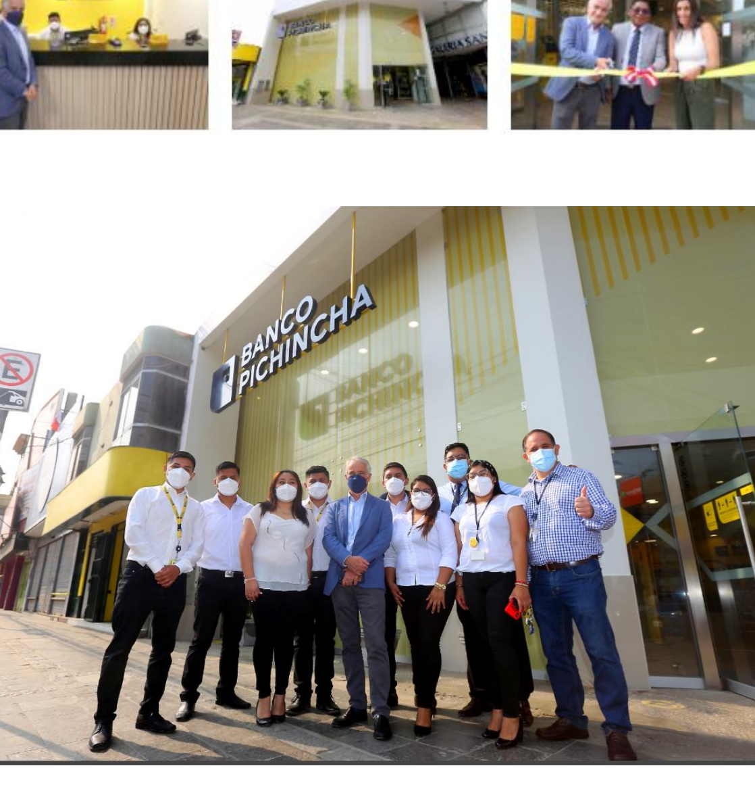

05
MVP y resultadosMVP and results
La propuesta no se quedó en papel: Banco Pichincha lanzó el nuevo formato de agencia, empezando por la agencia de Chincha (Perú), apostando por espacios más eficientes, digitales y amigables con sus clientes y el ambiente.
The proposal didn't stay on paper: Banco Pichincha launched the new branch format, starting with the Chincha (Peru) branch, betting on more efficient, digital, and friendly spaces for its clients and the environment.

Cobertura del lanzamiento del nuevo formato de agencia enfocado en la digitalización.
Coverage of the launch of the new branch format focused on digitalization.
El nuevo concepto pone énfasis en los espacios interactivos donde la tecnología y la atención de calidad conviven en un ambiente cómodo y seguro. Posteriormente, esta propuesta sería replicada en ciudades fuera de Lima, con una infraestructura moderna que prioriza los dispositivos tecnológicos, la resolución de consultas a través de los colaboradores y la comodidad — desde la señalización hasta la ubicación del mobiliario.
The new concept emphasizes interactive spaces where technology and quality service coexist in a comfortable, safe environment. The proposal would later be replicated in cities beyond Lima, with modern infrastructure prioritizing technology, advisor-led query resolution, and comfort — from wayfinding to furniture placement.

El nuevo modelo de agencia, ya implementado y operativo.
The new branch model, already implemented and operating.
🏗️ De la propuesta a la realidad
🏗️ From proposal to reality
El rediseño de Agencias 2.0 se materializó en un nuevo formato de agencia lanzado por Banco Pichincha, con planes de replicarse en más ciudades.
The Agencias 2.0 redesign materialized into a new branch format launched by Banco Pichincha, with plans to replicate it across more cities.